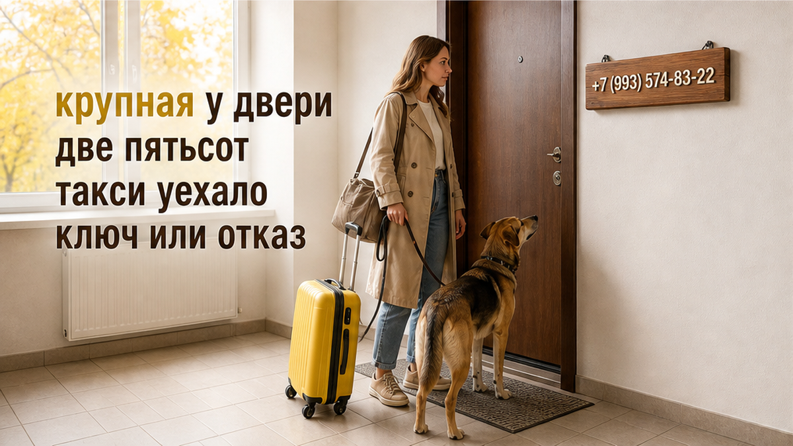
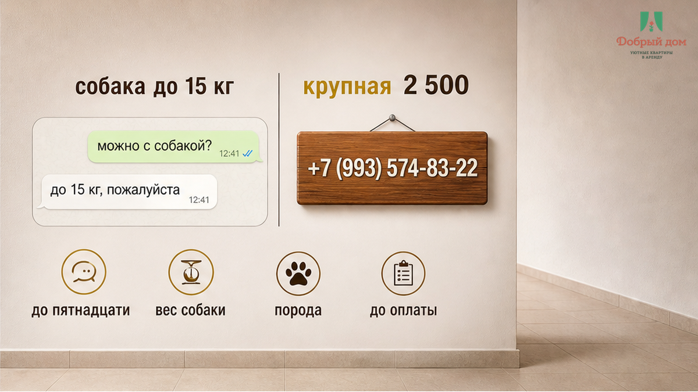
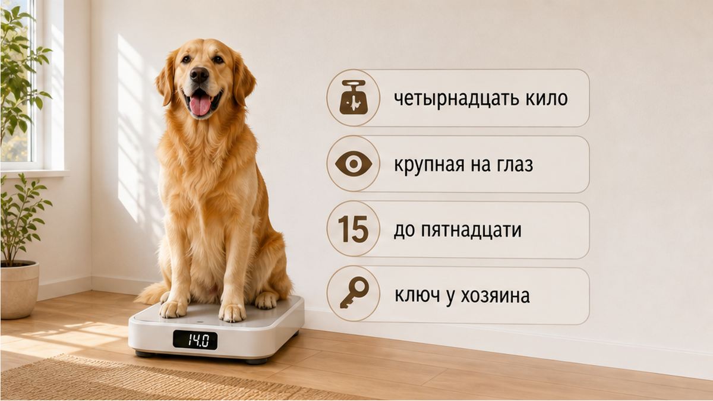
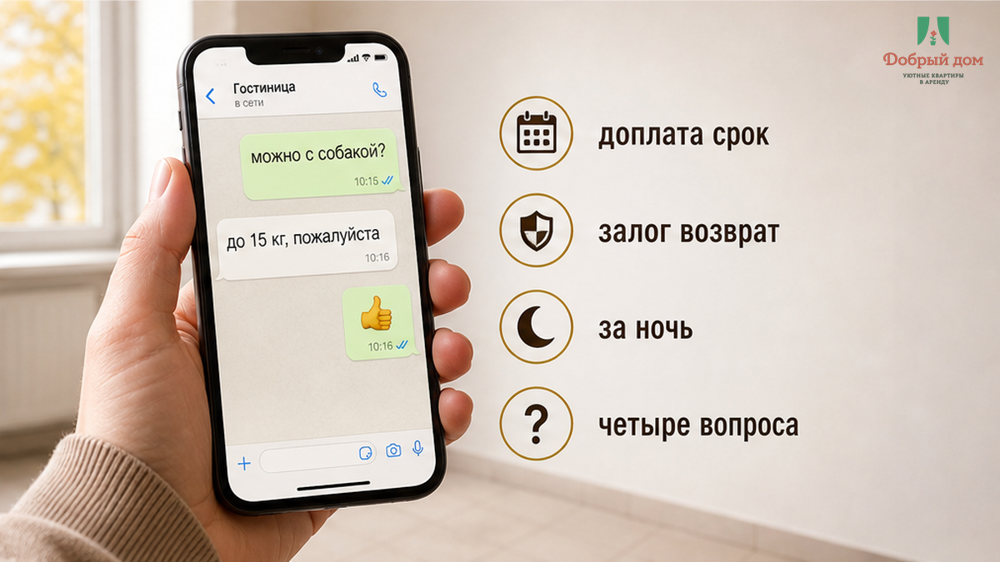
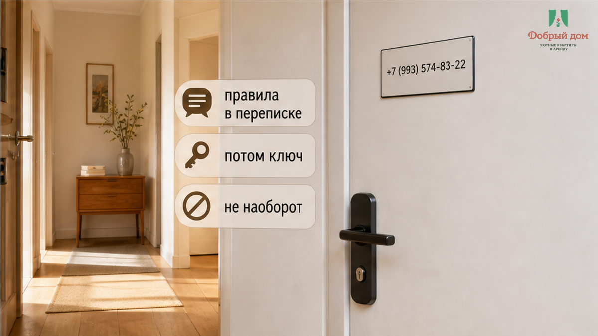
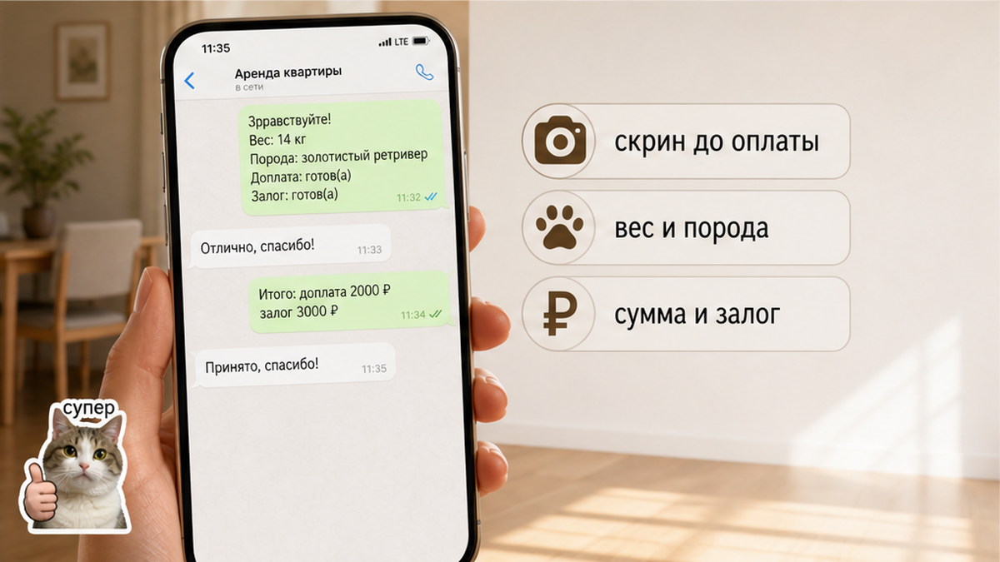

«Крупная. Доплата 2 500 ₽ — или не заселяем», — гостья услышала это у двери, когда в одной руке был чемодан, а в другой — поводок. «До 15 кг же согласовали», — ответила она и открыла переписку: «можно с собакой», «собака до 15 кг». Пёс был беспородный, весил 14 кг и всю дорогу спал в такси. Такси уже уехало. Две ночи были оплачены заранее — 8 400 ₽. И только теперь выяснилось, что «до 15 кг» и «крупная» — якобы два разных правила, хотя второе никто заранее не показывал.
Сломалось здесь не про деньги. 2 500 ₽ — сумма неприятная, но подъёмная. Сломалась иллюзия, что вопрос закрыт: если в переписке назвали порог по весу, значит, условие согласовано, и на заезде останется только получить ключ. Но у двери оказалось, что порог был не правилом, а вежливой фразой. Настоящее решение принималось на глаз — уже после дороги, оплаты и момента, когда человек стоит с вещами и уставшей собакой у входа.
Я хост посуточной в Тюмени. Это «Добрый дом». Такие истории регулярно приносят в личку в Telegram и MAX: «Я же спрашивал про собаку. Где я ошибся?»


Ошибка обычно не в собаке и не в самой доплате. Она в том, что фразу «можно с питомцем» принимают за договорённость. На деле это только общий допуск — без максимального веса, ограничений по породе и размеру, суммы доплаты, понимания, платится она за весь период или за каждую ночь, и без условий залога.
У гостя в голове появляется простая картинка: питомец разрешён, значит, можно приехать и заселиться. У принимающей стороны может быть другая: разрешены только некрупные и спокойные животные, а доплата обсуждается на месте. Обе картинки называются одними и теми же словами. Расходятся они ровно тогда, когда человек уже стоит у двери.
«Крупная собака» — не измеримая категория, пока рядом не стоит число. Для одного объекта 14 кг — крупный пёс, для другого — обычный. Пока в правилах нет «до 10 кг» или «до 15 кг», спор выигрывает тот, у кого ключ.
Когда условия записаны заранее, всё выглядит иначе. В одном случае тариф может быть разложен по размеру животного: 300, 500 или 1 000 ₽ за ночь. В другом в карточке прямо указано: до 10 кг, 1 000 ₽ за весь период проживания, залог 5 000 ₽. Сумма может не подойти, но гость видит её до оплаты и принимает решение без сюрприза.
То же видно в бытовых обсуждениях на mom.life: суммы 500–2 000 ₽ за питомца раздражают гораздо меньше, когда их называют заранее. Злит момент, в который цена появляется на заселении. Не «дорого», а «почему я узнаю об этом сейчас?»
Поэтому вопрос, который стоит задать до брони: какой максимальный вес и доплата за питомца — и это в объявлении или «на месте»? Ответ «на месте» — тоже ответ. Он означает, что решение оставили на порог.
Если в этот момент хочется не спорить в одиночку, а быстро сверить условия, напишите в Telegram или MAX до оплаты: вес собаки и сумму должны подтвердить словами, а не догадкой.


По запросам «квартиры посуточно тюмень» и «снять квартиру посуточно в тюмени» люди чаще смотрят цену, район и даты. Условия для животных читают по диагонали: увидели «можно с собакой» — выдохнули. Контекст спроса это подтверждает: Wordstat показывает 4 805 запросов по общему варианту, 1 490 — по уточняющему и около 10 — по более узкому сочетанию. Гость с животным растворяется в общем потоке и часто задаёт важный вопрос последним.
До оплаты нужны четыре ясных ответа.
Сохраните скриншот переписки. Не для драматичного спора, а чтобы у двери не листать чат дрожащими пальцами. Одно сообщение с весом, породой, суммой и залогом лучше, чем пять расплывчатых фраз.


Правило, которое появляется у двери, — это уже не правило, а рычаг. Машина уехала, вещи в руках, собака устала, а человек понимает: можно заплатить ещё 2 500 ₽, лишь бы войти. Нет. Так не заселяем. Если условие про питомца не назвали до оплаты, оно не должно возникать на пороге. Его место — в объявлении и переписке, а не у замка.
Сначала правила про питомца в переписке. Потом ключ. Не наоборот. Сначала письменный ответ про вес, породу, доплату и залог — потом деньги. Такая же поломка случается с другими условиями: например, ранний заезд нужно подтверждать заранее, а доплату за уборку лучше увидеть до выезда, а не в последний момент.
«Еду с одной собакой: вес ___ кг, порода ___. Подтвердите, пожалуйста: можно ли заселиться, есть ли доплата или залог за питомца, какая сумма и когда возвращается залог».
Если после оплаты начинают менять договорённости, не считайте это мелочью: доплата у двери может означать срыв исходных условий. А если после брони не прислали важные данные для заезда, полезно заранее понимать, что делать, когда условия меняются уже после оплаты.
«Можно с собакой» без веса, суммы и залога — это не договорённость, а занавеска: выглядит как вход, но отодвигается в любую сторону. Надёжная дверь начинается с цифр в переписке.
Напишите даты, число гостей, вес и породу собаки — менеджер ответит в личке и заранее подтвердит условия: